Content Tooling & Dependencies
The content layer is deliberately thin — Foundation on the device, Python on the developer's Windows machine.
vocabs.json and catalog.json into typed models inside VocabCatalogLoader, with per-field defaults so an older or partial file still loads.project.yml with buildPhase: resources, which copies them rather than handing them to the Swift compiler.Scripts/validate_content.py is the only local feedback loop — it runs on Windows in about a second and gates the whole CI pipeline.Scripts/migrate_vocabs.py converts legacy {term: definition} blocks into the ordered-array form used by the current schema.Scripts/make_app_icon.py squares off rounded or transparent corners — iOS applies its own mask and rejects an alpha channel — then resizes artwork to 1024×1024.Two-File Content Model
Words live in one file, order and presentation copy in another — because JSON objects have no guaranteed key order.
| Artifact | Shape | Role |
|---|---|---|
vocabs.json | book → section → category | Every word and definition. Word order is stored as an explicit array, not object keys. |
catalog.json | ordered books[] array | Book and section order, display titles, and the intro copy shown before each book and section. |
main | array of {term, definition} | The book's own words for that section — 194 across the library. |
extras | array of {term, definition} | Additional words collected alongside the section. Optional; review sections omit it. |
schemaVersion | integer | Currently 1. Present so a future format change can be detected rather than guessed. |
kind | lesson | review | Distinguishes a numbered day from a consolidation round, which the UI labels differently. |
--- in a definition | inline marker | Everything after it is a grammar usage note, not part of the meaning. Split out at load time into usageTip — 24 of the 358 entries carry one. |
{
"504": {
"day_1": {
"main": [
{
"term": "abandon",
"definition": "desert; leave without planning to come back"
},
{
"term": "impact",
"definition": "a strong influence --- followed by on or of"
}
],
"extras": [
{ "term": "disobey", "definition": "fail to obey" }
]
}
}
}{
"schemaVersion": 1,
"books": [
{
"id": "504",
"title": "504 Absolutely Essential Words",
"shortTitle": "504 Essential",
"author": "Barron's",
"theme": "indigo",
"sections": [
{ "id": "day_6", "title": "Day 6", "kind": "lesson" },
{ "id": "review_1","title": "Review 1","kind": "review" },
{ "id": "day_7", "title": "Day 7", "kind": "lesson" }
]
}
]
}Why Ordering Needs Its Own File
A real ordering problem, not ceremony: no sort function could place a review section correctly.
vocabs.json itself. In the 504 book, review_1 belongs between day_6 and day_7 — alphabetical or numeric sorting would both place it wrong.vocabs.json but missing from the catalog is not hidden — it is appended at the end with a generated title (day_9 becomes "Day 9") and a default intro. Forgetting the catalog line degrades presentation, never availability.What VocabCatalogLoader guarantees
- Merges both files into an ordered, indexed
VocabCatalog - Assigns each word a stable
VocabIDand anorderIndex - Splits a definition at
---into meaning andusageTip - Falls back to the legacy word format when it encounters one
- Returns a usable catalog even when content is partially missing
What the catalog adds
- Book
theme—indigofor 504,tealfor 400 shortTitlefor compact rendering in Reports- Per-book and per-section
introcopy kindto separate lessons from review rounds
Usage Tips Split from Definitions
Some definitions carry grammar advice after a --- marker. Advice about using a word is not what the word means, so it must not be memorised as the answer.
"a strong influence --- followed by on or of". Shown unsplit, the note becomes part of the text the learner is grading themselves against — so 24 of the 358 entries would train the wrong recall. The split happens once in VocabCatalogLoader, which keeps every screen downstream working with a clean definition and an optional usageTip rather than parsing strings itself.static func splitUsageTip(from raw: String)
-> (definition: String, usageTip: String?) {
let whole = raw.trimmingCharacters(in: .whitespacesAndNewlines)
let parts = whole.components(separatedBy: usageTipSeparator)
guard parts.count > 1 else { return (whole, nil) }
let definition = parts[0]
.trimmingCharacters(in: .whitespacesAndNewlines)
// Any further markers belong to the note, not to another field.
let tip = parts.dropFirst()
.joined(separator: usageTipSeparator)
.trimmingCharacters(in: .whitespacesAndNewlines)
guard !definition.isEmpty else { return (whole, nil) }
return (definition, tip.isEmpty ? nil : tip)
}// Rendered only after the definition is revealed, and styled as an
// aside rather than as more dictionary text.
if let tip = item.usageTip {
UsageTipView(tip: tip)
}
// Inside UsageTipView: the label repeats what the icon says, so the
// emoji is never the only cue, and the whole block is one VoiceOver
// element rather than three fragments.
Text(strings[.practiceTip].uppercased())
.foregroundStyle(Palette.warning)
.background(Palette.warningSoft)
.accessibilityElement(children: .ignore)
.accessibilityLabel("\(strings[.practiceTip]): \(tip)")An aside, not a second definition
The tip appears under the revealed definition in a tinted card with a lightbulb and a localised Tip / نکته label. Palette.warningSoft was added to the design system for it, in both light and dark variants, so the aside reads as advisory in either appearance without inventing a one-off colour.
Proven by the loader tests
The splitting rule is pure and total, so it is asserted directly: a plain definition passes through untouched, a marked one splits, a note-only row keeps its text, and repeated markers stay inside the tip. That is what took VocabCatalogLoaderTests from 14 tests to 16.
Content Validation Pipeline
With no local compiler, the validator is the entire local feedback loop — and it gates every macOS runner minute.
validate_content.py
- Duplicate terms within a section
- Empty or whitespace-only definitions
- Stray leading and trailing whitespace
- Catalog entries referencing sections that do not exist
- Sections present in data but absent from the catalog
Cost asymmetry
The validator runs on Ubuntu in roughly 15 seconds and gates both macOS jobs. A hand-edited JSON mistake fails in seconds instead of consuming a six-minute macOS build, and the same script runs unchanged on Windows before every push.
# The only verification available before code reaches CI
python Scripts/validate_content.py
# Convert legacy {term: definition} blocks to the ordered-array form
python Scripts/migrate_vocabs.py
# Rebuild the app icon: square the corners, strip alpha, resize to 1024
python Scripts/make_app_icon.py path/to/artwork.png
# The same check CI runs, with warnings promoted to failures
python Scripts/validate_content.py --strictLibrary & Section Navigation
How the content model surfaces in the app. Click any image to enlarge.
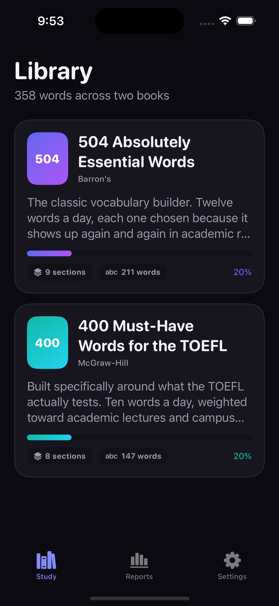
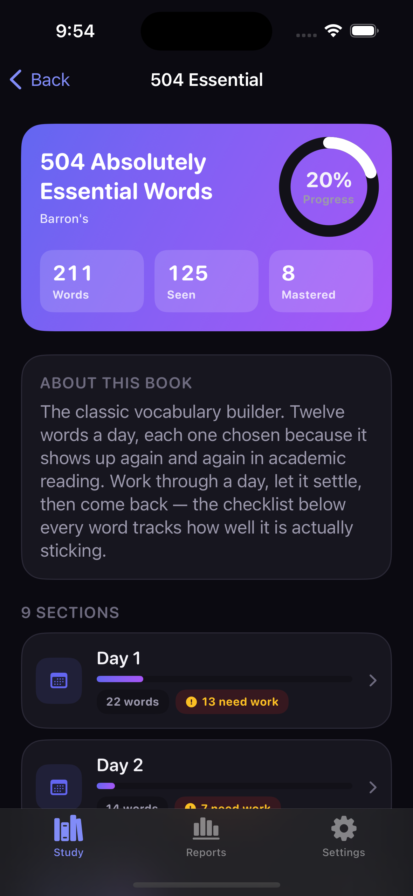
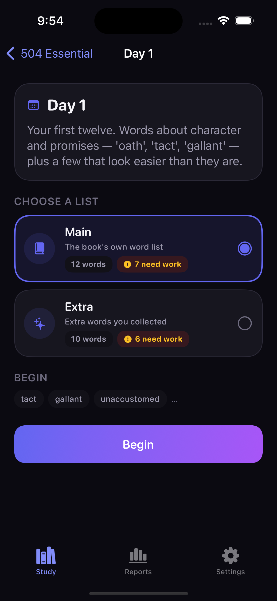
What the Data Layer Buys
Separating order from content is what makes the app extensible without touching Swift.
Design readout: Splitting content across two files costs one extra edit per new day and removes an entire class of bug. The app reads whatever is present at launch, unlisted sections degrade to a generated title rather than disappearing, and the validator catches the realistic mistakes — duplicates, empty definitions, catalog drift — before a single macOS runner minute is spent.
Engine Dependencies
Deliberately dependency-free: the engine is plain Swift so it can be tested without a running app.
AdaptiveOrdering and StatsAggregator. Both are enum namespaces of static functions with no instance state.The Five-Answer Cycle Rule
The checklist fills left to right; the fifth answer banks the cycle and starts a fresh row.
lastCycle and currentCycle is emptied. The banked row stays visible as a "last 5" recap until the user moves on, so the fifth answer is actually seen instead of the row blanking out underneath them.| Field | Value | Purpose |
|---|---|---|
attempts / correct / incorrect | lifetime | Never reset, so Reports can show real history across runs. |
currentCycle | [Bool], 0–4 long | The row being filled right now. |
lastCycle | [Bool]? | The banked five-answer recap, shown until the user advances. |
completedCyclesThisRun | integer | Drives "is this word done for this run?" and the global completion notice. |
consecutiveCorrect | integer | Feeds the mastery check and the ordering score's mastery decay. |
maxStoredSessions | 250 | Caps session history so the progress file cannot grow without bound. |
Weakness Score & Deterministic Ordering
A Laplace-smoothed error rate, adjusted by recency and mastery, with a total-order tie-break.
| Weight | Value | Effect |
|---|---|---|
errorWeight | 1.0 | Multiplier on the smoothed error rate — the main signal. |
recentMistakeBonus | 0.35 | Added when the most recent answer was wrong. Large enough to lift a word above an unseen one at once. |
masteryPenaltyPerStreak | 0.06 | Subtracted per consecutive correct answer, so mastered words sink. |
completedCyclePenalty | 0.04 | Subtracted per finished cycle this run, so genuinely done words stop crowding the front. |
maximumStreakConsidered | 5 | Caps the mastery decay so a long streak cannot drive the score arbitrarily negative. |
unseenScore | 0.5 | The score for a word with no history — the pivot the whole ranking is built around. |
Why a total ordering: Swift's sort is not stable, so a comparator that only checks the score could shuffle equal-scoring words between launches. Ties break first on orderIndex, then on the raw VocabID, which makes the queue completely reproducible — and lets a test assert an exact sequence.
Extra Practice Drill
A library-wide drill ranked by main-mode weakness, with its own counters.
Ranked by main, tie-broken by drill count
The queue is ordered by main-mode weakness, because that is where the real learning history lives. Among equally weak words the ones drilled least come first, so a long session keeps moving instead of looping over the same handful.
Weakest 25, 50, or everything
A scope selector caps the queue length. Running the full list weakest-to-strongest is what produces the promised behaviour: wrong words first, then the rest, then a full pass is complete and the queue starts over.
Isolation guarantee: PracticeMode routes every answer to either the main or the extra dictionary. A heavy drilling session can never flatter — or wreck — the study progress shown in the Library and Reports.
Core Engine Code
The scoring function, the comparator, and the cycle rule as they appear in the source.
static func weakness(_ stats: WordStats?,
weights: OrderingWeights = .default) -> Double {
guard let stats, stats.attempts > 0 else { return unseenScore }
// Smoothed so one wrong answer is not a 100% error rate forever.
let smoothedErrorRate =
(Double(stats.incorrect) + 0.5) / (Double(stats.attempts) + 1.0)
var score = weights.errorWeight * smoothedErrorRate
if stats.lastAnswerWasCorrect == false {
score += weights.recentMistakeBonus
}
let streak = min(stats.consecutiveCorrect, weights.maximumStreakConsidered)
score -= Double(streak) * weights.masteryPenaltyPerStreak
let cycles = min(stats.completedCyclesThisRun, weights.maximumCyclesConsidered)
score -= Double(cycles) * weights.completedCyclePenalty
return score
}// Records one self-graded answer and applies the five-step reset rule.
@discardableResult
mutating func record(correct isCorrect: Bool,
at date: Date = Date()) -> Bool {
attempts += 1
if isCorrect {
correct += 1
consecutiveCorrect += 1
} else {
incorrect += 1
consecutiveCorrect = 0
}
lastAnsweredAt = date
currentCycle.append(isCorrect)
guard currentCycle.count >= Self.cycleLength else { return false }
lastCycle = currentCycle
currentCycle = []
completedCycles += 1
completedCyclesThisRun += 1
return true
}// Weakest first. Ties break on source order, then on id, giving a total
// ordering — `sort` is not stable in Swift, so the comparator has to be
// complete or the queue could shuffle between launches.
items
.map { (item: $0, score: weakness(stats($0.id), weights: weights)) }
.sorted { lhs, rhs in
if lhs.score != rhs.score { return lhs.score > rhs.score }
if lhs.item.orderIndex != rhs.item.orderIndex {
return lhs.item.orderIndex < rhs.item.orderIndex
}
return lhs.item.id.rawValue < rhs.item.id.rawValue
}
.map(\.item)Practice Flow & Reporting
The engine as the user experiences it — question, reveal, summary, and the rolled-up report.
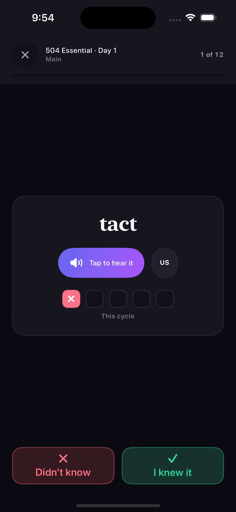
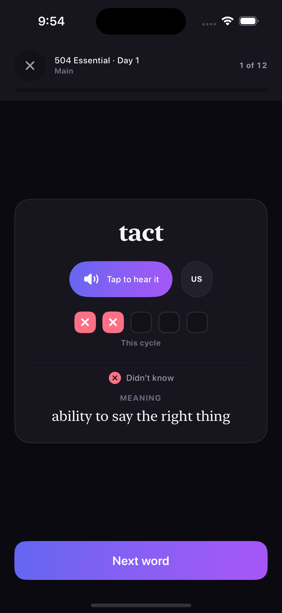
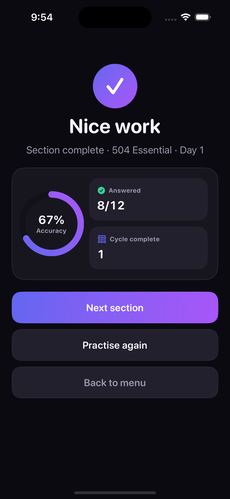
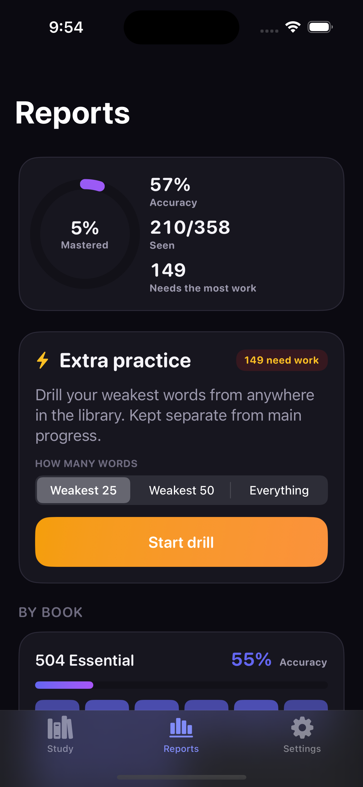
Aggregation & Report Semantics
How raw per-word records become the numbers on the Reports screen.
| Metric | Definition | Why It Is Defined That Way |
|---|---|---|
seen | Words with at least one attempt | Distinguishes "never opened" from "opened and struggling". |
completed | Finished a cycle this run | Per-run rather than lifetime, so a restart genuinely resets the goal. |
mastered | Completed and on a 3+ streak | Requires both history and current form, not one or the other. |
needsWork | incorrect > 0 and not mastered | Deliberately not a score threshold — the number has to match what a user would count by hand. |
weakest | Top 8 by weakness score | Only words answered wrong at least once qualify; an unseen word is new, not weak. |
allWordsCompleted | Every word banked a cycle | Drives the "you've been through everything" notice and the new-run offer. |
Diagnostic breakdown: StatsAggregator is pure and synchronous — the same catalog and progress always return the same numbers. With only a few hundred words, a full recompute per render is cheaper than any caching scheme would be to maintain, and it keeps the whole reporting path trivially testable.
Interface Libraries & Dependencies
Apple frameworks only — no third-party packages anywhere in the app target.
fileExporter/fileImporter flows used for progress backup.AVSpeechSynthesizer for on-device pronunciation, plus AVAudioSession configured as .playback with .duckOthers.Haptics, and UIWindowScene reached through LayoutDirectionBridge to force the window's writing direction. Both are contained in one file each rather than imported across the app.ProgressBackupDocument, the FileDocument wrapper required by SwiftUI's exporter..strings files — one Swift file is easier to keep in sync without a local build.Navigation & Module Structure
From the library down to a practice session, and back out through the summary.
Both books with progress meters and a "continue" offer from lastLocation.
Intro copy, then a Main/Extra picker with the adaptive queue previewed.
Modal session driven by PracticeViewModel and a PracticeConfiguration.
Accuracy, cycles, and three exits: next section, practise again, back to menu.
| Module | Responsibility |
|---|---|
App/RootView.swift | Root tab shell and one-time dependency wiring for all five stores. |
Navigation/Router.swift | Tab and stack navigation plus modal practice sessions — a coordinator in all but name. |
DesignSystem/Theme.swift | Palette, typography and the per-book indigo/teal accents. |
DesignSystem/Components.swift | Shared building blocks: checklist row, progress meter, section tiles, buttons, usage-tip card. |
Core/Localization/LayoutDirectionBridge.swift | Forces UIKit's writing direction to match the app's language setting — the whole UIKit surface area outside Haptics. |
Features/Practice/PracticeViewModel.swift | The practice session state machine — queue, reveal state, answer routing, completion. |
Features/Reports/ReportsView.swift | Mastery ring, section heat grid, weakest-words list, and the drill launcher. |
On-Device Pronunciation
Three accents with no bundled audio and no network access.
.ipa small and means a word added to vocabs.json is instantly pronounceable with no extra work.en-US — so speech never simply fails.private static func voice(for accent: SpeechAccent) -> AVSpeechSynthesisVoice? {
let matching = AVSpeechSynthesisVoice.speechVoices()
.filter { $0.language == accent.localeIdentifier }
if let enhanced = matching.first(where: { $0.quality == .enhanced }) {
return enhanced
}
if let any = matching.first { return any }
return AVSpeechSynthesisVoice(language: accent.localeIdentifier)
?? AVSpeechSynthesisVoice(language: "en-US")
}// `.playback` so pronunciation still works with the ring/silent switch
// flipped to silent — a muted vocabulary app is a bug report.
// `.duckOthers` lowers the user's music instead of stopping it.
let session = AVAudioSession.sharedInstance()
try session.setCategory(.playback,
mode: .spokenAudio,
options: [.duckOthers])
try session.setActive(true)Dynamic Type, VoiceOver & Bilingual Layout
Accessibility is structural here, not a pass at the end — it cannot be spot-checked locally.
Dynamic Type throughout
No fixed point sizes in body text. Because there is no local Simulator to sanity-check a layout at large text sizes, avoiding hard-coded sizes is the only reliable defence against clipping.
Combined controls
Multi-part controls — a word with its checklist and pronunciation button — are combined into single readable elements, so VoiceOver announces one meaningful item rather than five fragments.
English and Persian
A custom Strings table resolves both languages, with automatic right-to-left layout for Persian. String coverage across both languages is asserted in the test suite rather than checked by eye — though, as the next section shows, the SwiftUI environment alone was not enough to make the direction actually stick.
Language Switching & the UIKit Direction Bridge
A settings toggle that changes the writing direction is not a text change — it is a layout change in two frameworks at once.
\.layoutDirection describes only the SwiftUI tree; the UIKit layer underneath — the window, and the scroll views backing ScrollView, List and Form — carries its own semanticContentAttribute, and UIKit mirrors a right-to-left scroll view by transforming it rather than laying it out differently. After a round trip the window was still right-to-left while the content had gone back to left-to-right, and a mirrored container holding unmirrored content is what put the text on backwards.@MainActor
static func apply(_ direction: LayoutDirection) {
let attribute = attribute(for: direction)
for scene in UIApplication.shared.connectedScenes {
guard let windowScene = scene as? UIWindowScene else { continue }
for window in windowScene.windows
where window.semanticContentAttribute != attribute {
window.semanticContentAttribute = attribute
// The attribute alone marks the hierarchy dirty; this is
// what makes already-visible views redraw in the new
// direction instead of waiting for the next layout pass.
window.subviews.forEach { $0.setNeedsLayout() }
}
}
}RootView()
.environment(\.strings, settings.strings)
.environment(\.layoutDirection, layoutDirection)
// Rebuild rather than re-lay-out on a language change.
.id(language)
.preferredColorScheme(settings.settings.theme.colorScheme)
// Keep the UIKit layer pointing the same way as the SwiftUI one.
.onAppear { LayoutDirectionBridge.apply(layoutDirection) }
.onChange(of: layoutDirection) { LayoutDirectionBridge.apply($0) }Why this one was expensive: a direction bug is exactly the class of defect the no-local-Simulator constraint punishes hardest. It only appears after a settings round trip, so no single screenshot can show it — the CI gallery relaunches the app for each screen, so every image looked correct. This is the one place in the app where reaching past SwiftUI into UIKit was the right answer rather than a shortcut.
Light and Dark Appearance
Both appearances are captured for every screen on every CI run — the same screen, both ways.
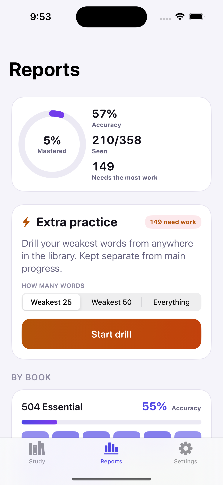
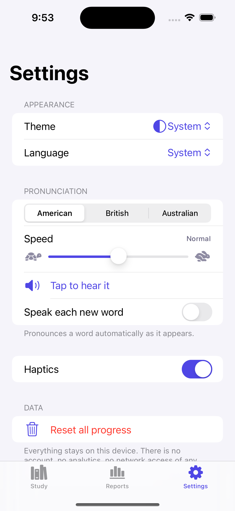
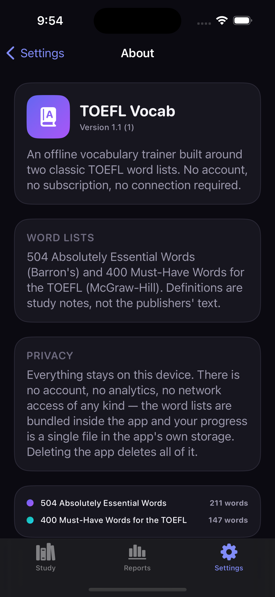
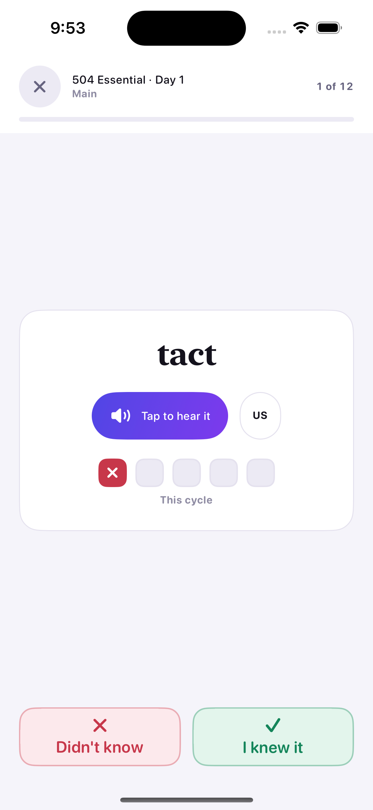
Designing Without Seeing
What building a UI with no previews and no local Simulator actually changes.
Design readout: Without SwiftUI Previews, every layout decision is a hypothesis until CI renders it. That pushes the design toward things that fail safely — Dynamic Type instead of fixed sizes, stores instead of scattered state, one view model instead of many — and makes the automatic screenshot job the real design tool. Eighteen images per run is what replaces the canvas.
Storage Dependencies
Foundation only — the decision not to adopt SwiftData is itself the main dependency choice.
.iso8601 dates and .sortedKeys output, so a saved file diffs cleanly and can be read by a human.applicationSupportDirectory for progress.json and performs the quarantine move when a file fails to decode.Task; each new answer cancels the pending write and reschedules it.ProgressBackupDocument bridges the encoded backup into SwiftUI's fileExporter and fileImporter.Why a Codable File and Not SwiftData
Three reasons, all downstream of having no local Simulator.
The door stays open: ProgressState is the only shape that would need porting, and ProgressStore is the only type the UI talks to. The migration is contained by construction rather than by promise.
Defensive Decoding & Quarantine
Every persisted type decodes field by field with defaults, because a hard throw would wipe real study history.
| Failure Mode | Handling | Rationale |
|---|---|---|
| Field added since the file was written | decodeIfPresent with a default | A save from an older build must still load rather than throw. |
completedCyclesThisRun missing | Falls back to completedCycles | Preserves meaning for files written before the per-run counter existed. |
| Hand-edited or truncated cycle | trimmed to 4 marks | A currentCycle at or over capacity would never bank; trimming restores the invariant. |
| File fails to decode entirely | Moved to progress-corrupt-<ts>.json | The user gets a working app and the original is still there to inspect. |
| Save throws | Logged in DEBUG, otherwise ignored | A failed write must not crash a study session; the next debounce retries. |
| Session list grows unbounded | Oldest records dropped past 250 | Keeps the file small enough to encode on every debounce without cost. |
Progress Export & Import
Sideloaded builds expire weekly, which makes a manual backup path a real requirement rather than a nicety.
ProgressState would round-trip fine, but any .json the user picked would decode into something and silently replace real history. The app marker and format field make a mistaken pick fail loudly.// Answers arrive one tap at a time; batching keeps the app off
// the filesystem during a fast session.
private static let saveDebounceNanoseconds: UInt64 = 600_000_000
private func scheduleSave() {
saveTask?.cancel()
saveTask = Task { [weak self] in
try? await Task.sleep(nanoseconds: ProgressStore.saveDebounceNanoseconds)
guard !Task.isCancelled, let self else { return }
self.saveNow()
}
}
func saveNow() {
saveTask?.cancel()
saveTask = nil
guard let fileURL else { return }
let data = try ProgressStore.encoder.encode(state)
try data.write(to: fileURL, options: [.atomic])
}// Throws rather than returning a partial result, so a caller can
// never half-apply a bad file.
static func decode(from data: Data) throws -> ProgressBackup {
let backup: ProgressBackup
do {
backup = try decoder.decode(ProgressBackup.self, from: data)
} catch {
throw BackupError.notABackupFile
}
guard backup.app == marker else { throw BackupError.notABackupFile }
guard backup.format <= currentFormat else {
throw BackupError.newerFormat(backup.format)
}
return backup
}Storage Readout
The cheapest thing that could possibly work, chosen on purpose.
Diagnostic breakdown: Every persistence decision here trades capability for failure surface, because the cost of observing a failure is a full CI round trip. Atomic single-file writes, field-by-field decoding with defaults, quarantine instead of crash, and a validated backup envelope together mean the realistic bad days — an old save file, a hand edit, a wrong file picked at import — all degrade instead of destroying study history.
Testing Dependencies
XCTest and in-memory doubles — no mocking framework, no fixture files.
bundle.unit-test target in project.yml with gatherCoverageData: true on the scheme.What Each Test File Proves
Each file maps to one part of the engine that has no visual signal.
| Test File | Tests | Covers |
|---|---|---|
ReportingAndStringsTests.swift | 16 | Stats aggregation, run-completion logic, and bilingual string-table coverage. |
VocabCatalogLoaderTests.swift | 16 | Book/section ordering against catalog.json, usage-tip splitting and its edge cases, legacy word-format fallback, graceful degradation on missing content. |
AdaptiveOrderingTests.swift | 14 | The weakness-scoring formula, ordering determinism, and the Extra Practice queue. |
WordStatsCycleTests.swift | 13 | The five-answer cycle rule, recap display, and resilience against a hand-edited or truncated save file. |
ProgressBackupTests.swift | 10 | Backup envelope validation, format rejection, and non-destructive failure on a wrong file. |
What is deliberately not tested
There are no view tests and no UI automation. A screenshot proves the layout renders; a unit test proves the numbers underneath it are right. Duplicating either in the other place would add maintenance without adding signal.
Why exact assertions are possible
Because ordering has a total tie-break and the aggregator is pure, tests assert exact sequences and exact counts rather than tolerances. Any drift in the scoring constants shows up as a hard failure.
Running the Suite
Runnable only inside CI or on a real Mac — there is no local target for it.
# Generate the project first — TOEFLVocab.xcodeproj is never committed
xcodegen generate
# Pick whatever iPhone simulator the runner happens to provide
UDID=$(xcrun simctl list devices available \
| grep -m 1 "iPhone" \
| grep -Eo '[0-9A-F]{8}-([0-9A-F]{4}-){3}[0-9A-F]{12}')
xcodebuild test \
-project TOEFLVocab.xcodeproj \
-scheme TOEFLVocab \
-destination "id=$UDID" \
-derivedDataPath buildTests \
CODE_SIGNING_ALLOWED=NOWhy the simulator is discovered, not pinned: hard-coding a device name breaks whenever the runner image changes its installed simulators. Grepping the first available iPhone keeps the workflow stable across Xcode updates without pinning an image version.
Pipeline Tools & Services
Everything that runs between a push on Windows and an app on a phone.
ubuntu-latest and macos-14, with a concurrency group that cancels superseded runs on the same ref.xcodegen generate to rebuild the project from project.yml.CODE_SIGNING_ALLOWED=NO..ipa on tagged runs..ipa with a free Apple ID — the only step performed by hand.Four-Job CI Pipeline
A cheap Ubuntu gate first, then two parallel macOS jobs, then a tag-only release build.
Ubuntu, ~15s. Validates both JSON files and gates everything below.
macOS. xcodebuild test — the only fast feedback on the engine.
macOS. Builds, verifies the bundle, screenshots every screen twice.
Tags only. Release build packaged as an unsigned .ipa.
| Job | Runner / Trigger | Purpose |
|---|---|---|
content-lint | ubuntu · every push/PR | validate_content.py --strict. Gates the macOS jobs so a bad JSON edit never costs a runner minute. |
unit-tests | macos-14 · every push/PR | Runs all 69 tests. Kept separate so a test failure still lets the screenshot job produce a picture. |
simulator-check | macos-14 · every push/PR | Builds, verifies bundled JSON and the compiled icon are really inside the .app, then captures 18 screenshots. |
device-build | macos-14 · tags matching v* | Release build with signing disabled, zipped into a Payload/ structure as an unsigned .ipa. |
Deterministic Screenshot Capture
Nine screens in two appearances, seeded so nothing is ever photographed empty.
screenshot:<name> argument. The harness seeds deterministic progress and opens straight to that page — so there is no UI automation script to go stale as the interface changes.BUNDLE=io.github.a1mohamad.toeflvocab
SCREENS="library book section practice practice-revealed summary reports settings about"
for appearance in light dark; do
xcrun simctl ui "$UDID" appearance "$appearance"
for screen in $SCREENS; do
xcrun simctl terminate "$UDID" "$BUNDLE" || true
xcrun simctl launch "$UDID" "$BUNDLE" "screenshot:$screen"
sleep 3
xcrun simctl io "$UDID" screenshot "screenshots/${screen}-${appearance}.png"
done
done
COUNT=$(ls -1 screenshots | wc -l | tr -d ' ')
if [ "$COUNT" -lt 18 ]; then
echo "::error::expected 18 screenshots, got $COUNT"
exit 1
fiThe Bundle Verification Guard
A failure mode that builds, launches and screenshots perfectly while shipping nothing.
If the buildPhase: resources entry in project.yml were ever dropped, XcodeGen would silently produce a working app with no vocabulary data at all. It would build, launch, and screenshot to an empty library — a failure that looks exactly like a UI bug and would cost a full round trip to diagnose. The job checks the artifact instead of trusting the build.
Three checks on the .app
vocabs.jsonandcatalog.jsonpresent in the bundleAssets.carexists — the asset catalog really compiled- At least one
AppIcon*.pngat the bundle root
Why the icon check keys on PNGs
A single-size asset catalog makes actool write CFBundleIcons rather than CFBundleIconName, so asserting on the latter is a false alarm. The rendered PNGs at the bundle root are what iOS actually draws, so their presence is the real signal.
Why it matters here specifically: a missing icon is invisible until the app is on a home screen, which on this project means a tag, an artifact download and a Sideloadly run. Catching it in CI turns a multi-step manual discovery into a red check mark.
Tagged Release & Sideloading
Regular pushes only run the free Simulator check; a real installable build needs a version tag.
# Only a v* tag triggers the device-build job git tag v1.2 git push origin v1.2 # Then: download the unsigned .ipa artifact from the run, # sign and install it with Sideloadly using a free Apple ID.
xcodebuild build \ -project TOEFLVocab.xcodeproj \ -scheme TOEFLVocab \ -sdk iphoneos \ -configuration Release \ CODE_SIGNING_ALLOWED=NO \ -derivedDataPath buildDevice APP_PATH=$(find buildDevice/Build/Products -maxdepth 2 -name "*.app" | head -n 1) mkdir -p Payload cp -R "$APP_PATH" Payload/ zip -qr TOEFLVocab.ipa Payload
| Free-Tier Limit | Consequence | Status |
|---|---|---|
| Sideloaded builds expire | Re-signing needed roughly weekly | Known limit |
| App ID registration cap | Only a few IDs per rolling 7-day window | Known limit |
| No paid entitlements | No push, iCloud sync, or App Groups | By design |
| No App Store distribution | Install is manual via Sideloadly | By design |
Project Synthesis & Roadmap
What a hard constraint produced, and where the project would go if it were lifted.
Delivered: A complete offline iOS vocabulary trainer — 358 entries across 17 sections and two books, an adaptive practice engine with a deterministic weakness score, a five-answer cycle rule, library-wide Extra Practice, full reporting, on-device pronunciation in three accents, grammar usage tips split out of the definitions that carry them, English/Persian UI with RTL held consistent across the SwiftUI and UIKit layers, and progress backup and restore. 29 Swift files, 5,853 lines, 69 unit tests.
Engineering result: The whole repository is an answer to one constraint — no Mac. That produced a generated-not-committed project file, a Python content validator as the local feedback loop, a four-job pipeline that gates expensive runners behind a 15-second check, an 18-image screenshot suite standing in for SwiftUI Previews, and a bundle-verification step that catches a build which succeeds while shipping nothing.
Where it stops: Progress does not sync across devices, installed builds expire roughly weekly, and there are no push reminders. All three are consequences of the free Apple ID tier rather than design gaps.
Moving forward:
- Grow the library beyond 358 entries — a data-only change, already validated by tooling.
- Revisit SwiftData once iOS 17 is a safe floor;
ProgressStateis the only shape that would need porting. - Add spaced-repetition scheduling on top of the existing weakness score, using
lastAnsweredAt, which is already recorded but unused for timing. - App Store distribution, iCloud progress sync and push reminders — all gated behind the paid Apple Developer Program this project deliberately avoids.